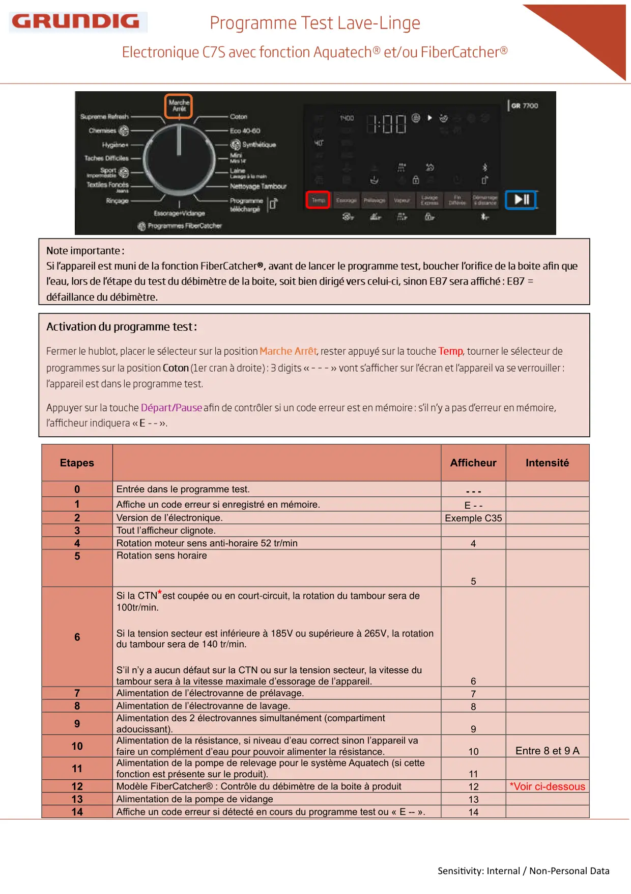
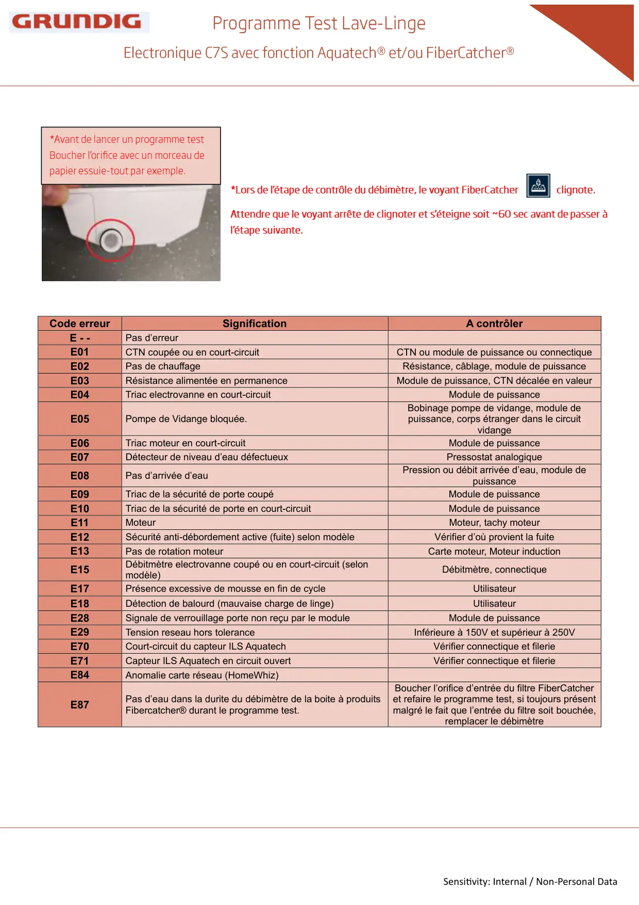

Prog Test lave linge C7S Aquatech FiberCatcher Grundig

Sensitivity: Internal / Non-Personal DataEtapesAfficheurIntensité0Entrée dans le programme test.- - -1Affiche un code erreur si enregistré en mémoire.E - -2Version de l’électronique.Exemple C353Tout l’afficheur clignote.4Rotation moteur sens anti-horaire 52 tr/min45Rotation sens horaire56Si la CTN*est coupée ou en court-circuit, la rotation du tambour sera de100tr/min.Si la tension secteur est inférieure à 185V ou supérieure à 265V, la rotationdu tambour sera de 140 tr/min.S’il n’y a aucun défaut sur la CTN ou sur la tension secteur, la vitesse dutambour sera à la vitesse maximale d’essorage de l’appareil.67Alimentation de l’électrovanne de prélavage.78Alimentation de l’électrovanne de lavage.89Alimentation des 2 électrovannes simultanément (compartimentadoucissant).910Alimentation de la résistance, si niveau d’eau correct sinon l’appareil vafaire un complément d’eau pour pouvoir alimenter la résistance.10Entre 8 et 9 A11Alimentation de la pompe de relevage pour le système Aquatech (si cettefonction est présente sur le produit).1112Modèle FiberCatcher® : Contrôle du débimètre de la boite à produit12*Voir ci-dessous13Alimentation de la pompe de vidange1314Affiche un code erreur si détecté en cours du programme test ou « E -- ».14
1 / 2
Sensitivity: Internal / Non-Personal DataCode erreurSignificationA contrôlerE - -Pas d’erreurE01CTN coupée ou en court-circuitCTN ou module de puissance ou connectiqueE02Pas de chauffageRésistance, câblage, module de puissanceE03Résistance alimentée en permanenceModule de puissance, CTN décalée en valeurE04Triac electrovanne en court-circuitModule de puissanceE05Pompe de Vidange bloquée.Bobinage pompe de vidange, module depuissance, corps étranger dans le circuitvidangeE06Triac moteur en court-circuitModule de puissanceE07Détecteur de niveau d’eau défectueuxPressostat analogiqueE08Pas d’arrivée d’eauPression ou débit arrivée d’eau, module depuissanceE09Triac de la sécurité de porte coupéModule de puissanceE10Triac de la sécurité de porte en court-circuitModule de puissanceE11MoteurMoteur, tachy moteurE12Sécurité anti-débordement active (fuite) selon modèleVérifier d’où provient la fuiteE13Pas de rotation moteurCarte moteur, Moteur inductionE15Débitmètre electrovanne coupé ou en court-circuit (selonmodèle)Débitmètre, connectiqueE17Présence excessive de mousse en fin de cycleUtilisateurE18Détection de balourd (mauvaise charge de linge)UtilisateurE28Signale de verrouillage porte non reçu par le moduleModule de puissanceE29Tension reseau hors toleranceInférieure à 150V et supérieur à 250VE70Court-circuit du capteur ILS AquatechVérifier connectique et filerieE71Capteur ILS Aquatech en circuit ouvertVérifier connectique et filerieE84Anomalie carte réseau (HomeWhiz)E87Pas d’eau dans la durite du débimètre de la boite à produitsFibercatcher® durant le programme test.Boucher l’orifice d’entrée du filtre FiberCatcheret refaire le programme test, si toujours présentmalgré le fait que l’entrée du filtre soit bouchée,remplacer le débimètre
2 / 2